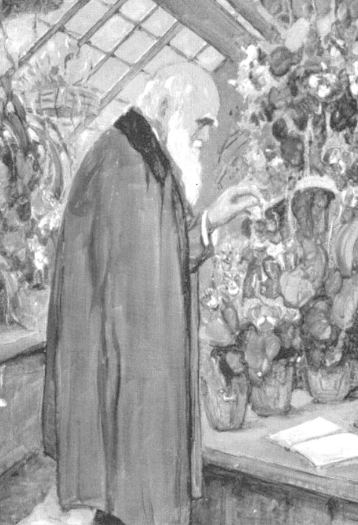
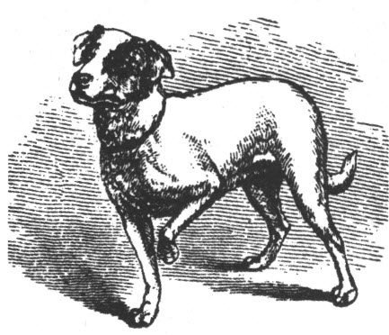
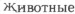

第1章
表情的一般原理
·General Principles of Expression·
现在我开始来叙述三个原理；我以为，这三个原理可以去说明人类和比较低等的动物在各种不同的情绪和感觉的影响之下、所不随意地使用的大多数表情和姿态。可是，我只有在到了自己的观察结束的时候，方才达到这三个原理。在现在这一章和下面两章里，我们将以一般的方式来讨论这三个原理。

年事已高的达尔文，在党豪斯别墅的暖房里观察鲜花。
三个主要原理的叙述——第一个原理——有用的动作，在和一定的精神状态互相联合的时候就成为习惯的动作，并且在各种个别情况下不再依存于它们有用或者无用而实现——习惯的力量——遗传——人类的联合性习惯动作——反射动作——习惯向反射动作转移的情形——比较低等的动物的联合性习惯动作——结论
现在我开始来叙述三个原理；我以为，这三个原理可以去说明人类和比较低等的动物 (1) 在各种不同的情绪和感觉的影响之下、所不随意地使用的大多数表情和姿态。 (2) 可是，我只有在到了自己的观察结束的时候，方才达到这三个原理。在现在这一章和下面两章里，我们将以一般的方式来讨论这三个原理。在这里，将利用到那些从人类和比较低等的动物两方面所观察到的事实；可是，动物方面的事实具有更加可取的价值，因为它们好像很不容易使我们受骗。在第四章和第五章里，我将讲述到几种比较低等的动物的特殊表情；而在后面几章里，则讲述到人类的特殊表情。因此，每一个人都能够亲自来判断，我的三个原理究竟对这个问题的理论方面能够说明到什么程度。我以为，这三个原理会这样相当满意地去说明这样许多的表情，所以此后很可能使人认为，可以把所有的表情都包括在这三个原理当中，或者包括在那些和它们极其相似的原理当中。在这里，我未必再要来提出说，像狗摇摆尾巴、马把耳朵向后牵伸、人把双肩耸起、或者皮肤的毛细管扩大这一类在身体的任何部分方面的动作或者变化，也可以同样良好地代替表情。现在来说明三个原理如下：
1．有用的联合性习惯原理——一定的复合动作，在已知的精神状态下，为了减轻一定的感觉或者满足一定的欲望等而具有直接或者间接的用处；每次当这种同样的精神状态再被诱发出来的时候，即使这种情形很微弱，也就会靠了习惯的和联合的力量而出现一种倾向，就是要去完成同样的动作，即使这些动作在这一次完全无用也曾发生。有一些靠了习惯而通常和一定的精神状态联合起来的动作，可以通过意志而部分地被抑制下去；在这些情形下，那些很难听受意志来分配的肌肉，就显露出仍旧极其想要去行动的准备，因此就同时引起了一些动作，我们就把这些动作认做是表情动作。在另一些已知情形下，也需要用其他的轻微的动作去抑制某一种习惯性动作；这些动作也同样是表情动作。
2．对立原理——一定的精神状态会引起一定的习惯性动作；而这些动作也像在我们的第一个原理的情形下一样，是有用的动作。如果现在有一种直接相反的精神状态被诱发出来，那么立刻就会显露出一种强烈的不随意的倾向，就是要去完成那些具有直接相反的性质的动作，即使这些动作完全无用也会发生；在有些情况下，这些动作就表现得极其显著。
3．由于神经系统的构造而引起的、起初就不依存于意志、而且在某种程度上不依存于习惯的作用原理——在感觉中枢受到强烈的激奋时候，神经力量就过多地发生出来，或者是依照神经细胞的相互联系情形和部分地依照习惯的情形而朝着一定的方向传布开来，或者是像我们所看出的，神经力量的供应可以发生中断。这样就产生了那些被我们认为具有表情性质的效果来。为了叙述简明起见，可以把这个第三原理叫做神经系统的直接作用原理。
至于说到我的第一原理，那么可以知道，习惯的力量有多么的强大。有时，我们虽然没有丝毫的努力或者意识，却也能够完成最复杂的困难的动作。我们还没有肯定地知道，习惯由于什么原因而会这样有效地去减轻复杂的动作，可是，心理学家们则认为： (3) “如果神经纤维的兴奋次数愈来愈多，那么这些神经纤维的传导能力也跟着增大起来”。这种说法，不仅可以应用到运动神经和感觉神经方面去，而且也可以应用到那些和思考行动有联系的神经方面去。未必可以去怀疑说，在那些惯常被使用着的神经细胞或者神经里，有某种物理变化正在发生出来，因为如果不这样的话，那么也就不可能去理解：为什么这种想要去实现某些获得的动作的倾向会遗传下去。我们可以从下面的例子里，来看出这些动作的遗传情形：马具有某些遗传来的步伐，例如它们本来并不具有缓驰和溜蹄；年轻的指物猎狗（pointer）用鼻子指示猎物和年轻的波状长毛猎狗（setter）用蹲立方式指示猎物；某些家鸽品种具有特殊的飞行方式，等等。在人类方面，我们也可以看到类似的情形，例如有些怪癖和姿态的遗传；我们以后将再谈到这个问题。对于那些承认物种逐渐进化的人看来，蜂雀蛾（humming-bird sphinx-moth，Macroglossa ）提供了一个最惊人的完善的例子，就是它遗传到了那些最困难而必须细致地互相配合的动作，因为这种蛾在从茧子里钻出来以后，不久就把自己的细长像毛一样的吻突伸出来，插进花朵的细孔里去，而且可以使人看到，它的身体在空中采取着均衡不动的姿势，这种情形就可以从它的鳞毛上的蜡粉方面来得到证明；我相信，决没有人曾经看到这种蛾去学习完成自己的这种需要非常精确瞄准的艰苦任务。
除了存在着一种要去完成某种动作的遗传或者本能上的倾向，或者一种对于一定种类的食物的遗传上的嗜好以外，在个体方面，时常或者一般还需要某种程度的习惯。我们在马的步伐方面看到这种习惯的影响情形；而在猎狗的指物动作方面，则也达到某种可见的程度；虽然有几只年幼的猎狗在初次被带领出外打猎时候，能够精确地指示出猎物来，但是它们往往也会把自己所遗传到的正确姿态，去和一种不正确的嗅觉和甚至是错误的眼力联合在一起。我听到有人肯定说，如果让初生的小牛去吮吸一次母牛的乳，那么以后要去人工喂奶给它吃就非常困难了。 (4) 大家知道，如果把一种树叶去喂养毛虫，而以后再把另一种树叶去喂养它们，那么虽然这种树叶在自然环境里就是它们的正常的食物，但是它们却宁可饿死而不愿去吃食这些树叶； (5) 还有在很多其他情形里，也可以观察到这类现象。
这种联合能力的意义得到大家的公认。培恩先生指出说：“动作，感觉、感情状态，在同时或者彼此接连地发生出来的时候，就具有一种倾向，要联系在一起或者凝集起来，这时候就采取了这样的方法：在它们当中，如果有一种以后在头脑里发生出来，那么这就会引起其余几种也要发生出来的趋势”。 (6) 对于我们的目的说来，相当重要的事情是要去充分相信：一批动作容易去和另一批动作联合起来，并且去和各种不同的精神状态联合起来；我将提供出很多良好的例子来，首先是关于人类方面的例子，以后再谈到关于比较低等的动物的例子。当中有几个例子，虽然具有极其琐屑的性质，但是对于我们的目的方面说来也很适合，而可作为比较重要的习惯方面的例子。大家知道，如果不去采取多次重复的训练，而要用四肢去完成那些朝着我们以前从来没有实践过的、某些反对方向进行的动作，那么这真有多么的困难，或者甚至是不可能的。在感觉方面，也发生类似的情形；例如，在用交叉的两只手指的指尖去把一个石弹滚转这个普通的实验里，我们就会觉得正好像有两个石弹在被推动似的。每个人在跌倒在地面上的时候，就会伸出自己的手臂来保护自己的身体；正像阿里松（Alison）教授所说，即使我们故意向柔软的床铺上跌倒下去，也很少有人能够抑制得住这种自卫动作的。一个人在出门的时候，就会完全毫无意识地戴上自己的手套来；好像这是一种极其简单的手续，但是一个已经教导过小孩戴手套的人，就知道情形绝不是这样的。
当我们的精神很奋发的时候，我们的身体动作也会和这种情形配合起来；可是在这里，除了习惯以外，还有另一个原理也起着一部分的作用；这个原理就是神经力量的无定向的溢流。诺尔福克（Norfork，剧中人物）在讲到红衣主教瓦耳西（Wolsey）的时候说道：
在他的脑海里，出现了
某种奇怪的波涛：他咬紧自己的嘴唇，身体发抖；
突然他又停止脚步，低下头来朝着地面，
接着又把自己的手指贴在太阳穴上；站直身子，
跳起来，飞步前进；于是又再停止脚步，
用力捶击自己的胸部；不久，他就把自己的视线投向月亮。——我们看到，
他亲自做出了十分奇怪的姿势。
——莎士比亚：《亨利八世》，第三幕，第二场
一个普通的人在心头发生令人烦恼的问题的时候，就往往会去搔头；我以为，他是由于习惯而去采取这样的动作的；这时候好像他经验到了一种身体上的略微不舒适的感觉，就是好像发生了自己的头部发痒的感觉；因为他特别容易发生这种头痒的感觉，所以他就用手去搔头，解除这种感觉。还有人在感到心里烦恼时候，就用手去擦眼睛；或者心绪纷乱的时候，就做轻微的咳嗽；在这两种情形里，好像他觉得在自己的眼睛里或者在气管里发生了一种略微不舒适的感觉。 (7)
因为眼睛在经常不断的使用，所以这种器官特别容易在各种不同的精神状态下，由于联合作用而行动起来，即使在那里明明没有什么东西可看也是这样。根据格拉希奥莱所说，一个人在绝对否认某种建议的时候，差不多一定会闭住自己的双眼，或者把面部掉转过去；可是，如果他接受这个建议，那么他就会用点头去表示肯定，同时把自己的眼睛张开得很大。这个人在这种点头和把眼睛张大的时候，就好像他清楚地看到了这件事情似的；而在前面一种情形里，则好像他不曾去看或者不愿意去看这件事情似的。我曾经注意到，有些人在描写一种可怕的景象时候，往往顿时闭紧双眼，或者摇起头来，好像不要去看某种讨厌的事情，或者是要驱除这种情形似的；我自己也理解到这种情形，当我在黑暗地方想象到一种可怕的景象时候，就会紧闭起自己的眼睛来。每个人在突然看到一种东西，或者向四面环视的时候，就要举起自己的眉毛来，以便使眼睛迅速张大开来；杜庆博士指出说， (8) 一个人在企图回想到某件事情的时候，往往就举起自己的眉毛来，好像要去看到这件事情似的。有一个印度绅士，向爱尔斯金先生提出了确实相同的关于自己本地人的意见来。我曾经注意到一个年轻的女士在竭力想回忆起一个画家的姓名来的情形；起初她望着天花板的一个角落，接着又去望相对的一个角落，每次举起一条靠近所望的方面的眉毛；可是，在那里是没有东西可看的。
在大多数上面所举出的例子里，我们就能够明白，联合性动作怎样可以由于习惯而获得；可是在有些个别的方面，某些奇怪的姿态或者怪癖，就会由于完全不能说明的原因，而和一定的精神状态联合发生出来，并且显然无疑是由于遗传而得来的。我曾经在另外一处地方，根据自己的观察，举出了一种和愉快感情联合在一起的特别复杂的姿态；这种姿态是父亲遗传给他的女儿的；而且我那时还举出另外几个类似的事实。 (9) 在现在这本书里，以后还要举出另外一个关于奇怪的遗传动作的有趣例子来，这种动作和一种想要获得某种东西的欲望联合在一起。
还有另外一些动作；它们通常在一定的周围情况下完成，并不和习惯有关，而且好像是由于模仿或者某种同感而发生出来的。例如，我们可以看到，有些人在用剪刀剪东西的时候，会使自己的双颚按照剪刀的剪动的拍子同时张开和闭合。小孩在练习写字的时候，往往会使自己的舌头随着手指的移动而转动，显出一副滑稽可笑的样子来。有一个绅士是我能够信赖的人；他向我肯定说，有好几次，当一个公开表演的歌唱家突然唱得声音有些沙哑时候，就可以听到有很多听众也随着咳嗽起来；可是在这里，很可能是习惯在起着作用，因为我们自己在相似的情况下也曾咳嗽起来。我还听到人家说，在跳高竞赛的时候，当选手一跳跃起来，就有很多观众，通常是男人和男孩，也随着跳动自己的双脚；可是在这里，大概也是习惯在起着作用， (10) 因为使人极其怀疑的是，妇女是不是也曾这样行动。
反射动作——从严格的意义说来，反射动作（reflex action）是由于周围神经（末梢神经）的兴奋而发生出来的；周围神经把自己的冲动力传送给一定的神经细胞；于是这些神经细胞又再去激发一定的肌肉或者腺去行动；全部这个过程，用不到什么感觉或者意识来参加，就能够发生出来，不过，感觉或者意识往往也会伴随着发生出来。因为很多反射动作都是极其富于表情的动作，所以在这里必须来略为详细地考察这个问题。除此以外，我们还将看到，有几种反射动作，逐渐转变成为习惯性的动作，因此也就很难和那些由于习惯而引起的动作区分开来。 (11) 咳嗽和打喷嚏，就是大家都知道的两种反射作用的例子。虽然打喷嚏要有很多肌肉的协合动作才能实现，但是婴孩的最初的呼吸动作常常是打喷嚏。呼吸作用一部分是有意的，但主要还是反射的作用；它在不受到意志干涉的时候，就以最自然的和最良好的方式进行下去。有极多数目的复合动作是反射的动作。可以被提供出来作为良好的例子之一的，就是那个时常引用到的无头蛙的例子；这种无头蛙当然不能够感觉到什么动作，也不能够去有意识地完成什么动作。可是，如果把一滴酸液放置到这种状态的蛙的腿的下表面上，那么它就会用一只脚爪的上表面拭去这一滴酸液。如果已经把这只脚爪切除，那么它就不会发生这种动作。“因此，在几次无效果的努力以后，就放弃了这方面的尝试，变得好像是焦躁不安的样子，并且根据普夫留格尔（Pflüger）所说，它好像是在找寻另外一些方法；最后它就去使用另一只脚上的脚爪，于是成功地拭去了这滴酸液。在这里，显然我们所见到的，并不是单单肌肉的收缩情形，却是一种复合的协调的收缩情形，它按照一种适合于特殊目的的应有的程序性而行动。这些动作从全部外表上看来，好像是动物的理智所引导出来和它的意志所鼓舞起来的，不过大家所公认的它的理智和意志的器官已经被切除去了。 (12)
我们可以从下面的事实里看出反射运动和随意运动之间的差别来：根据亨利·霍伦德（Henry Holland）爵士对我所说，年龄极小的婴孩不能够去完成某些略为相似于打喷嚏和咳嗽的动作，就是：他们不能够去擤出鼻涕来（就是捏紧鼻子而用力从鼻孔里喷出气来），而且也不能够把痰咳出自己的喉咙来。他们不得不去学习完成这些动作的方法；可是，他们在年纪稍大的时候，就向我们学会了这些方法，而且把这些动作完成得差不多好像反射动作一样。可是，我们只能够部分地或者完全不能够用意志去控制打喷嚏和咳嗽；而咳出痰来和擤出鼻涕的动作则完全听受我们的支配。
当我们意识到自己的鼻腔或者气管里有某种刺激物存在的时候，就是当同样的神经细胞也像在打喷嚏和咳嗽的情形下一样被激奋起来的时候，我们就能够有意用力从这些腔道里喷出气来，把这种刺激物驱除出外；可是，我们不能够像靠了反射动作那样，采用差不多相同的力量、速度和准确程度去进行这些动作。在发生反射动作时候，感觉神经细胞显然是去刺激运动神经细胞，但是并没有丧失去那种耗用在最初和大脑两半球（我们的意识和意志的座位）通信方面的力量。好像到处都存在着一种在同样的动作之间的深刻的对抗作用；这些动作在某些情形下受到意志的支配，而在另一些情形下则受到反射刺激的机制的支配；这种对抗作用就表现在这些动作所用来发生的力量方面，也表现在那种激发这些动作的容易程度方面。正像克劳德·伯尔那德（Claude Bernard）所肯定说，“L'influence du cerveau tend donc à entraver les mouvements réflexes，à limiter leur force et leur étendue”。 (13)
那种要去进行反射运动的有意识的愿望，有时会停止或者中断自己的执行，即使是适当的感觉神经细胞可以被激奋起来，也曾发生这种情形。例如，在很多年以前，我下了一笔小赌注去和一打（12个）青年打赌说，如果他们嗅了鼻烟，那么他们并不会打喷嚏，但是他们都宣称自己一定会打喷嚏；于是他们大家都取了一小撮鼻烟去嗅闻，但是由于都想成功地打出喷嚏来，却反而一个人也没有办到这件事，只是他们的眼睛流出泪水来罢了；因此，他们毫无例外地都输给我一笔赌注。霍伦德爵士指出说， (14) 如果专心要去进行吞咽动作，那么这反而会阻止正常的动作的进行；有些人认为，要吞服丸药非常困难；这种情形很可能就是由于太专心于吞咽方面的缘故，或者至少是一部分由于这种原因而发生。
还有一个大家都知道的反射动作的例子，就是：在有东西接触到眼睛表面的时候，眼睑就会不随意地闭合起来。如果作出朝向面部打的姿势，那这也会引起眨眼的动作，但是这种动作是习惯性的动作，而从严格的意义上说来却不能算做是反射动作，因为这种刺激是通过意识而被传达出去，并不是靠了周围神经的兴奋而被传达出去的。这时候整个身体和头部通常就同时突然向后退避。可是，如果想象到危险好像并不迫近，那么也能够阻止这些后退运动；不过，单单我们这种通知自己没有危险出现的理智，是不足够的。我可以举出一个琐屑的事实，来说明这一点；这个事实曾经使我感到很有趣。我曾经在动物园里，把自己的面部紧贴在一间饲养着南非洲大毒蛇（puff-adder）的房间正面的厚玻璃上，同时打下坚强的决心，如果这条毒蛇隔着玻璃扑过来，我不向后退缩；可是，当这条蛇真的一扑过来的时候，我的决心马上消失，同时我就立刻用惊人的速度后跳了一两码路。我的意志和理智，就在这种从来没有体验到的想象上的危险面前显得无能为力了。
就地惊起的猛烈程度，大概一部分依靠想象力的活跃程度来决定，而另一部分则依靠神经系统的习惯的或者临时的状况来决定。一个人如果去注意到自己的马在疲劳状态时候和在强劲有力时候的惊起情形，那么就会看出，它怎样从简单瞥见某种突然显现的物体而顿时怀疑到它是不是有危险的这个时刻起，一直到这样迅速而猛烈的一跳的经过情形；这匹马大概不会有意用这样迅速的方式向后回旋过去。一匹强劲有力而且肥壮的马的神经系统，能够把自己的命令非常迅速地传达给运动系统方面，以致使它没有时间去考虑前面的危险究竟是不是实在的。这匹马在做了一次猛烈的惊起以后，受到了激奋，于是它的血液就充分流进到它的脑子里去，因此它非常容易又再惊起；我已经讲到过，在年幼的婴孩方面，也发生同样的情形。
如果有一种突发的嘈声，而它的刺激由于听觉神经而被传达出去，那么它所引起的惊起，在成年人方面，就同时会引起眨眼的动作来。 (15) 可是，我观察到，我的几个婴孩在出生了两星期的时候，虽然会由于突然发生的声音而惊起，但是确实并不时常因此眨眼；而且我相信他们绝没有眨过眼。年纪较大的婴孩的惊起，显然表明出一种想要去抓住某种可以阻止跌倒的东西的模糊企图。当我的一个婴孩出生了114天的时候，我把一只厚纸做的匣子靠近在他的眼睛面前挥动，但是他的眼睛一次也没有眨动；后来我把几颗糖果放进纸匣里去，仍旧在原来的地位上把纸匣挥动起来，这个婴孩就每次眨眼，并且略为惊起。 (16) 显然在这里不可能去假定说，这个被保育得很周到的婴孩会根据经验来知道，在他的眼睛附近所发生出来的沙沙声就表明是一种对眼睛的危险。可是，这种经验却是在一连经过了很多世代的长时间以后渐渐地获得的；根据我们在遗传方面的知识来判断，如果亲代初次所获得的习惯在子代里表现出来，那么子代在表现出这种习惯的时候的年龄，绝不可能小于亲代在获得它的时候的年龄。
从上面这些叙述里，显然可以知道，有几种动作，起初虽然是有意识地被完成的，但是后来大概就由于习惯和联合作用而转变成为反射动作，而到现在就成为很坚固的遗传的习惯；因此，每次在发生出那些原来由于意志作用而激发起这些习惯来的同样的原因时候，这些习惯即使当时对我们毫无用处， (17) 也会进行下去。在这些情况下，感觉神经细胞就直接去激发运动细胞，而不再事先去通知我们的意识和意志所依存的那些细胞。大概打喷嚏和咳嗽的动作，起先是由于那种要尽可能猛烈地从敏感的通气腔道里吐出任何的刺激物来的习惯而获得的。至于说到时间方面，那么这些习惯就得要经过十分长久的年代，方才会变成天生的，或者转变成为反射动作，因为大多数或者全部高等的四足兽都具有这些习惯，所以这些习惯最初一定是在很古的年代里被获得的。我还不能去说，为什么咳出痰来的动作并不是反射动作，而必须由我们的小孩来学习它；可是，我们都可以知道，用手擤出鼻涕来的动作则必须学习才能得来。
在无头蛙拭去自己的大腿上的酸液或者其他东西的时候，它的这些动作是多么良好地为了特殊目的而互相配合起来；因此，确实可以使人相信，这些动作起初是有意地被完成的，后来就由于长期的习惯而变得更加容易发生出来，最后终于无意识地被完成，或者是和大脑两半球无关地被完成。
其次，也可以认为，惊起大概最初是由于那种想要赶快脱离开危险这种习惯而被获得；这种习惯是在我们的任何一种感觉每次向我们提出警告的时候发生出来的。正像我们所看到的，惊起和眨眼同时发生，而眨眼则是为了要保护眼睛这种在身体上最柔弱的敏感的器官；我以为，它时常也和一种突然强烈的吸气同时发生，而吸气则是一种对任何一种狂热努力的自然准备。可是，当一个人或者一匹马惊起的时候，心脏就朝着肋骨方面剧烈鼓动起来；在这里，我们可以正确地说，一种从来没有受到意志支配的器官参加了身体的一般反射动作。可是，对这个问题，我们将在后面一章里再谈。
在网膜受到明亮的光线刺激时候，瞳孔就收缩起来；这种现象也是一种说明这种起初显然绝不能够有意地被完成、而后来则由于习惯而巩固起来的动作的例子；我们还没有遇见到任何一种动物的瞳孔会受到它的意志的有意识的支配。 (18) 在这里，就应当从那些完全不同于习惯的机制里去找寻出另一种关于这些情形的说明来。极度兴奋的神经细胞向着另一些和它们有联系的细胞方面放射神经力量的现象，例如那种由于明亮的光线降落在眼睛的网膜上而引起打喷嚏的情形，大概可以帮助我们去了解有些反射动作的起源。这种神经力量的放射，如果会引起一种具有减弱初次刺激的倾向的动作，也像瞳孔收缩能够防止过多的光线降落到网膜上去的情形一样，那么以后就可能为了这种特殊目的而得到利用和发生变异。
再次，还有一件事实值得提出来，就是：反射动作极可能是像所有的身体的构造特征和本能一样，容易遭受到细微的变异；同时任何的变异如果是有益处的和相当重要的，那么也就具有一种被保存和遗传下去的倾向。例如，有些反射作用如果为了某种目的而有一次被获得，那么以后就可能不依靠意志或者习惯，而朝着那个对某种完全不同的目的有用的方向发生变异。我们确实有理由可以认为，这一类情形是和很多本能方面所发生的情形互相类似的，因为虽然有些本能单单由于长期不断的遗传的习惯而发展下去，但是还有些极其复杂的本能却由于保存以前本能的变异而发展下去，就是靠了自然选择而发展下去。
我已经有些冗长地讨论过了关于获得反射动作方面的问题，不过据我看来还是讨论得极不完全，因为反射动作时常和那些表现我们的情绪的动作联系在一起；并且必须表明，在它们当中至少有几种反射动作，起初为了要去满足某种欲望或者消除厌恶感觉的目的，而可能在意志的参加下被获得。
比较低等的动物的联合性习惯动作——我在前面讲到人类的综合性习惯动作时候，已经举出几个和各种不同的精神状态或者身体状态联合起来的动作；它们现在虽然是漫无目的的，但是起初本来是有用的，而现在对于某些情况方面也仍旧是有用的。因为这个问题对我们非常重要，所以我现在就举出相当多的有关动物方面的类似事实来，不过当中有很多事实的性质非常琐屑。我的目的，就是要表明出，有些动作起初由于具有一定的目的而产生出来；还有，在差不多相同情况下，它们仍旧是在毫无用处的时候由于习惯而顽强地产生出来。在下面所举出的情形当中的多数情形里，这类倾向是由于遗传而来的；我们可以根据所有同种的不论年幼或者年老的个体都在同样完成这些动作方面，来断定这一点。下面我们还可以看到，这些动作是在各种极不相同的、常常很曲折的、而且有时也是错误的联合作用的影响下被激发起来的。
当狗想要睡在地毯或者其他坚硬的地面上时候，它们通常就毫无意义地打圈子，并且用自己的前爪去搔挖地面，好像它们打算要把草践踏下去和挖掘出一个洞穴来的样子；显然无疑，它们的野生祖先以前在空旷的草原上和在森林里生活的时候就是这样做的。 (19) 动物园里的胡狼（jackal）、大耳狐（fennec）和其他跟狗有亲缘关系的动物，就用这种方式去践踏褥草的；可是，很使人奇怪的是：动物园里的看守人在观察了几个月以后，却从来没有看到狼具有这种习性。根据我的朋友的观察结果，有一只半白痴的狗（这种状态的狗特别容易去服从无意义的习惯）在睡下以前，竟在地毯上绕转了13个圈子。
有很多食肉动物，在爬行到自己的猎物那里去而且准备要向前冲奔或者跳扑到猎物身上去的时候，就低下头来，并且把身体贴近地面；显然可以知道，这种动作一半是为了要隐藏自己，一半则是为了作好冲奔过去的准备；这种习惯就在我们的指物猎狗和波状长毛猎狗身上非常显著地成为遗传的习性了。其次，我有几十次注意到，当两只彼此不相识的狗在空旷的道路上相遇的时候，第一只先看见对方的狗，虽然双方相距有100～200码远，在起初一望见以后，就常常低下自己的头来，通常把身子略微伏下，甚至有时贴近在地面上；就是说，即使道路十分空旷，而且距离也很大，它还是采取了适当的姿势，要隐藏起来，并且想要向前冲奔或者跳扑过去。还有，所有各种狗在专心监视和慢慢地接近它们的猎物时候，就常常要把自己的一只前脚屈曲，向上缩起一长段时间，准备作一次慎重的跨步；这是指物猎狗的很显著的特征。可是，当它们的注意力一被激发起来的时候，它们就会由于习惯而作出完全相同的动作来（图4）。我曾经看到，有一只狗站立在高墙的脚下，仔细倾听墙壁背后的声音，同时就把自己的一只前脚屈曲起来；不过在这时候，不可能发生出一种慎重向前接近的企图来。

图4 小狗在监视一只蹲在桌上的猫的姿态 （从烈治朗德尔先生处取来的照片）
狗在大便以后，也差不多像猫一样采取相同的方式，往往同时把自己的四只脚向后搔土几次，甚至在光秃的石子铺的路面上也是这样，好像它的目的是要用泥土去覆盖自己的粪便似的。动物园里的狼和胡狼，在大便以后也采取完全相同的动作；可是，看守人向我肯定说，不论狼、胡狼或者狐，在大便以后，即使有机会让它们去搔土，也总是不会像狗所做的那样把自己的粪便掩盖好。因此，如果我们正确理解到上面所说的这种像猫的习性，而且这种习性是确实无疑地存在着的，那么我们就可以把它看做是一种残余的无目的的习惯动作，最初是由狗属的远祖为了一定的目的而采取的，后来就在极其长久的期间里被保存下来。可是，埋藏残余食物的习惯则完全和这种习惯不同。
狗和胡狼
(20)
很爱好用头颈和背部靠在腐臭的尸肉上滚转和擦拭。虽然狗（至少是饲养得很周到的狗）不吃腐臭的尸肉，但是它们好像很喜爱这种臭气。巴尔特莱特先生曾经替我观察了狼；他把腐臭的尸肉给狼吃，但是从来没有看到它们靠在尸肉上打滚。我听到有人指出一件事情，并且认为它是确实的，就是：那些大概是起源于狼种的大狗，好像并不像那些大概是起源于胡狼种的较小的狗一样，时常靠在腐臭的尸肉上打滚。在我的 （小猎狗，terrier）不感到饥饿的时候，如果丢一块褐色饼干给它（我也听到一些类似的例子），那么它起初就把饼干当做老鼠或者其他的猎物那样，把它丢掷和咬弄，此后又把饼干当做腐臭的尸肉而靠在它上面反复打滚，到最后方才吃掉这块饼干。这种情形真好像是有一种假想的口味附加到了这种不好吃的东西身上去似的；狗也尽量把这块饼干想象成活的动物或者是一种带有尸肉的臭气的东西，因此就依照习惯而去对付它，但是它比我们更加明白实际的情形并不是这样的。我曾经看到，我的这只小猎狗在咬死一只小鸟或者老鼠以后，也用同样的方式去对付它们。
（小猎狗，terrier）不感到饥饿的时候，如果丢一块褐色饼干给它（我也听到一些类似的例子），那么它起初就把饼干当做老鼠或者其他的猎物那样，把它丢掷和咬弄，此后又把饼干当做腐臭的尸肉而靠在它上面反复打滚，到最后方才吃掉这块饼干。这种情形真好像是有一种假想的口味附加到了这种不好吃的东西身上去似的；狗也尽量把这块饼干想象成活的动物或者是一种带有尸肉的臭气的东西，因此就依照习惯而去对付它，但是它比我们更加明白实际的情形并不是这样的。我曾经看到，我的这只小猎狗在咬死一只小鸟或者老鼠以后，也用同样的方式去对付它们。
狗用一种迅速摇动自己的一只后腿方法去轻搔身体；如果我们用一根手杖去擦动狗的背部，那么它们的习惯就显出有这样的强烈，以致它们不能自制地向空中或者地面乱抓，作出无用而且可笑的样子来。在我用手杖去这样擦动刚才讲到的那只 （小猎狗）时，有几次它就用另一种习惯的动作来表示自己的高兴态度；这种动作就是把空气也当做是我的手一样去舔它。 (21)
马用自己的牙齿啃咬它们所能达到的身体部位的方法，去搔身体；可是有一种更加普通的情形，就是一匹马会向另一匹马表明自己身体上的所需要搔痒的部位，于是它们就彼此互相啃咬这些痒处。我曾经请求一个朋友去注意到这个问题；他观察到，当他去摩擦自己的马的头颈时候，这匹马就伸起头部，露出牙齿，并且移动双颚，正好像要去啃咬另一匹马的头颈的样子，因为它绝不能去啃咬自己的头颈。如果一匹马被搔得很厉害，例如在梳理它身上的毛的时候，那么它想去啃咬东西的欲望就变得非常难以忍耐的强烈，以致使它要去磨动自己的牙齿，并且去咬自己的看马人，不过这种情形不是恶意的。同时，这匹马由于习惯而把自己的双耳垂下，紧贴身旁，好像要防护耳朵以免被咬的样子，正像在两匹马互相格斗时候所发生的情形一样。
当一匹马急躁地要动身赶路的时候，它就做出一种极其相似于向前行进的动作来，就是用蹄子去踢地面。 (22) 还有，如果马在马厩里等待到将近喂饲料的时候而且又急切地想要吃食饲料，那么它们就用蹄子去踢铺筑的地面或者褥草。在我的马当中，有两匹马在看到或者听到饲料被喂给邻近的马时候，就作出这种动作来。可是在这里，我们大概可以把它叫做真正的表情（true expression），因为大家都认为，用蹄子踢地面的动作是热望的表征。
猫用泥土掩盖自己的大便和小便；我的祖父 (23) 曾经看到，有一只小猫在抓取炉灰去掩盖一匙滴落在炉子上的清水；因此，这里的习惯的动作或者本能的动作，并不是由于上面所讲到的动作或者由于气味而错误地被激发起来的，却是由于视觉而错误地被激发起来的。大家都清楚地知道，猫不喜欢自己的脚沾湿；这种习性大概是它们原先居住在埃及的干燥地区里的缘故；因此，它们在沾湿了自己的脚时候，就剧烈抖动去脚上的水迹。我的女儿把水倒进一只靠近小猫的头旁的玻璃杯里，它就依照通常的办法抖动自己的脚；因此在这里，我们所遇见的，是一种被联合的声音所错误地激发起来的习惯的动作，而不是被触觉所激发起来的动作。
小猫、小狗、小猪和大概很多其他幼年的动物，都用自己的前脚轮流去推压自己的母畜的乳腺，使它们分泌出更加丰富的乳来，或者促进母乳的分泌。还有，时常可以看到，无论是普通的或者是波斯种的小猫，而且时常也有些老猫（有些自然科学家认为，波斯种猫是特殊的变种），在舒适地躺卧在暖和的披肩或者其他柔软物体上面以后，就用前脚去轮流轻敲自己的乳腺；同时它们的脚趾伸开，脚爪略微突出，完全像是吮吸母乳时候的情形。小猫时常同时抓取披肩的一片塞进嘴里和吮吸它，而且通常由于狂喜而眯起眼睛和哼叫起来；这种情形就清楚地表明出在这里也发生了同样的动作。这种有趣的动作通常只不过是由于一种和温暖而柔和的表面的感觉互相联合的情形而被激发起来；可是，我曾经看到一只老猫，在它的背部被人搔动而感到高兴的时候，它就采取同样的方式用脚在空中踢动；因此，这种动作差不多已经变成了愉快感觉的表示了。
在讲过了吸乳动作以后，我还可以补充说，这种复合动作，也像前脚轮流伸出的动作一样，是反射作用，因为在把小狗的脑子前部切除去以后，如果把一个蘸有奶水的手指塞进它的嘴里去，那么也可以观察到这种动作。 (24) 最近，在法国地方有人说，吸乳动作单单是由于嗅觉而被激发起来的；因此，如果小狗的嗅觉神经遭到破坏，那么它就不会去吸乳。同样地，小鸡在孵化出来以后还不到几小时，就已经具有啄食小颗食物的惊人能力；这好像是由于听觉而被推动的，有一个卓越的观察者从人工孵化的小鸡方面发现：“如果模仿母鸡的啄食声，用指甲在木板上叩击出声音来，那么就可以初次教会小鸡去啄取肉吃”。 (25)
我只打算再举出一个关于习惯的、无目的的动作的例子来。冠鸭（sheldrake，麻鸭属，Tadorna ）在退潮以后露出的沙滩上找寻食物吃；当它发现一个有蠕虫粪的孔穴时候，“它就开始用脚去叩击地面，好像是在孔穴上面跳舞的样子”；这种动作是要使蠕虫钻出地面来。同时，圣约翰（St. John）先生说，在他的已经驯顺的冠鸭“跑来索取食物的时候，它们就采取一种急躁的迅速的方式用脚叩击地面”。 (26) 因此，我们差不多可以认为这是它们的饥饿时候的表情。巴尔特莱特先生告诉我说，红鹳（flamingo，火烈鸟）和冠鹭（Kagu，学名Rhinochetus jubatus ）在急切要吃东西的时候，也采取同样奇怪的方式，用脚叩击地面。还有，翠鸟（鱼狗，Kingfisher）在捕鱼的时候，时常 (27) 把鱼乱打，直到鱼死才停止；在动物园里，翠鸟时常在吞食那些喂给它们吃的生肉块以前，先要把肉块叩打。
我以为，现在我们已经足够来证明我的第一个原理的真实情形了；就是可以证明说，如果任何一种感觉、欲望，不高兴等在一连很多世代的期间里引起某种随意运动来，那么每当同样的、或者类似的，或者联合性的感觉等被感受到的时候，即使它非常微弱，也会差不多肯定地激发起一种要完成相似的动作的倾向来；不过，在这种情况下，这种动作可能是完全没有用处的。这一类习惯的动作时常或者一般是可以遗传下去的，而且有时和反射作用并没有什么区别。当我们以后谈到人类的特殊的表情时候，我们就会看出，我们的第一个原理的后半部分是确实有据的，正像现在这一章开头所讲到的情形一样；就是说，那些靠了习惯而和一定的精神状态联合起来的动作，可以通过意志而部分地被抑制下去；可是，严格的不随意的肌肉，而且还有那些很难听受意志来分别支配的肌肉，却仍旧有想要去行动的准备；这时候它们的动作往往是很富于表情的。相反的说来，在意志暂时或永久被削弱的时候，随意肌就比不随意肌先停止动作。根据贝尔爵士的意见， (28) 病理学家所熟悉的一个事实，就是：“如果脑子患病而引起衰弱症，那么它对于那些在自然状态下最能受到意志支配的肌肉所产生的影响最大”。在以后几章里，我们还要去考察到另一个包括在我们的第一个原理当中的假定，就是：有时需要用其他的轻微的动作，去阻止某一种习惯性动作；这些轻微的动作也是作为一种表情的手段而有用的。
————————————————————
(1) 比较低等的动物（lower animals）在俄译本里简单译做“动物”（

）；按照书里的叙述，都是指脊椎动物。——译者注(2) 赫伯特·斯宾塞先生：（论文集，第二集，1863年，第138页）把情绪（emotion）和感觉（sensation）作了明显的区分；他以为感觉就是“在我们的身体组织里发生出来”的。他把情绪和感觉双方都归属于感情（feeling）。
(3) 米勒：《心理学基础》，英文译本，第2卷，第939页。还可以参看斯宾塞对于同样主题和对于神经发生方面的有趣的臆测：在他所著的《生物学原理》（Principles of Biology ）里，第2卷，第346页；还有在他所著的《心理学原理》（Principles of Psychology ）里，第二版，第511—557页。
(4) 在很久以前，希坡克拉特（Hippocrates）和著名的哈维（Harvey）早已作出了极其相似的见解来，因为他们两人都肯定说，幼年动物在出生了不多几天以后忘却吮吸母乳的本领，并且必须要经过相当困难方才会使它重新获得这种本领。我是根据达尔文博士的著作《动物生理学》（Zoonomia ，1794，第1卷，第140页）而提出这些说法来的。［斯登来·海恩斯博士在寄给我的信里也确证了这类情形。］
(5) 参看我的叙述和很多类似的事实，《动物和植物在家养下的变异》（The Variation of Animals and Plants under Domestication ），1868年，第2卷，第304页。
(6) 培恩：《感觉和智力》，第二版，1864年，第332页。赫胥黎教授指出说（心理学基础教程，Elementary Lessons in Physiology，第五版，1872年，第306页）：“可以把下面的情形认为是一条规则：如果有两种精神状态同时或者相继地被激发起来，而且有相当多的次数和相当的活跃程度，那么以后在它们当中，即使有一种精神状态发生，也足够引起另一种精神状态来，而且这并不和我们心里想不想去这样做有关”。
(7) 格拉希奥莱（《人相学》，第324页）在谈论到这个问题的时候，就提供出了很多这一类例子来。参看第42页，关于眼睛的张开和闭合的叙述。他引用了恩格耳（Engel）的说法，就是：一个人在思想发生变化的时候，也会使自己的步伐发生变化（第323页）。
(8) 杜庆：《人相的机制》，1862年，第17页。
(9) 《动物和植物在家养下的变异》，第2卷，第6页。对我们说来，习惯性的姿态的遗传情形有这样的重要，因此我很高兴在得到加尔顿（F. Galton）先生的允许以后，引用他亲自所写的话，来说明下面的显著情形：“下面有一段关于三个连续世代的个体所发生的习惯的叙述，是特别使人感到兴趣的；因为它只是在熟睡的时候发生，所以也就不可能由于模仿而发生，却应该被认为是完全天生的。这些情节是十分可靠的，因为我已经详细调查过它们，并且还根据很多彼此无关的证据来讲述。曾经有一个地位相当高的绅士；他的妻子发现他有一种怪癖，就是：他在床上仰面朝天而熟睡的时候，会慢慢地把右臂举起到面部上面，达到前额处，然后突然向下降落，因此手腕正好重落在鼻梁上。这种怪癖并不是每天夜里发生的，但是有时就会发生，而且毫无明确的原因来引起它。有时在一小时里，或者在一小时以上的时间里，连续重复发生这种情形。这个绅士的鼻子很高，所以鼻梁在受到手腕重击以后就发生肿痛。有一次，它肿得很厉害，而且经过了长期的治疗，因为初次引起肿痛的打击，会一夜夜连续发生下去。他的睡衣的袖口有纽扣，在手腕落下的时候，它会造成严重的擦伤，所以他的妻子就不得不把它除去，而且还曾经有几次设法把他的手臂捆缚起来。
在这个绅士死去以后很多年，他的儿子和一位小姐结婚：这位小姐从来没有听说过丈夫家里过去发生这类事件。可是，她仔细观察到她的丈夫也有同样的怪癖；不过因为他的鼻子并不特别高，所以从来没有由于这种打击而受伤。［自从第一次写了这一段话以后，曾经发生一次击伤的事件。有一天，他的身子十分疲倦，就躺在安乐椅里熟睡起来；当时突然惊醒过来，发现自己的鼻子被自己的指甲抓破得很厉害。］在他半醒半睡的时候，例如在安乐椅里假寐的时候，不会发生这种怪癖；但是在熟睡的时候，就容易发生这种情形。他也像自己的父亲一样，间歇地发生这种情形；有时一连很多夜间都不发生，有时则在一连几夜的一定时间里几乎接连发生。在发生这种情形的时候，他也像他的父亲一样，把右手举起来。
在他的孩子当中，有一个女孩也遗传到同样的怪癖。她在发生这种怪癖的时候，也把右手举起，但是以后的动作略微不同，因为她在把手臂举起以后，并不使手腕落下到鼻梁上去，而是把半握的手掌从上面落下到鼻子上去，相当迅速地从鼻子上滑过去。这个女孩也是非常间歇地发生这种情形，有时在几个月里不发生，有时则接连不断地发生。”
［莱德克尔（R. Lydekker）先生（在没有写明日期的信里）告诉我一个关于遗传特性的例子，就是眼睑发生特征性下垂的情形。这种特征就是眼睑提肌（lavator palpebre）麻痹，或者很可能是完全缺乏。起初在一个妇女A夫人的身上，发现这种特性；她有3个小孩，当中一个小孩B就遗传到了这种特性。小孩在长大以后生有4个小孩，这些小孩都有这种遗传性的眼睑下垂特性；当中有一个女儿，在出嫁以后生有2个小孩，在这两个小孩当中，第二个小孩具有这种特性，但是只有一边的眼睑下垂。］
(10) ［有一个美国医生在写给我的信里说道，他在看护产妇分娩的时候，有时就觉得自己也在模仿着产妇使肌肉紧张起来。这种情形很有趣，因为在这里习惯的影响由于必要而被排除去了。］
(11) 赫胥黎教授指出说（《生理学基础》，Elementary Physiology ，第五版，第305页），脊髓所特有的反射动作是天生的；可是，由于脑子的帮助，就是由于习惯，就可以去获得无数人工的反射动作。微耳和（Virchow）认为（“Sammlung wissensnschaft，Vorträge”etc.，“Ueber das Rückenmark”，1871年，第24页和第31页），有些反射动作很难和本能区分开来；我们还可以辅充说一句，有些本能不能够和遗传的习性区分开来。［关于这种实验方面，有一个批评家提出说，如果记录得正确无误，那么这种实验就演示出了意志的作用，而没有演示出反射作用来；同时又有一个批评家就采用根本怀疑这种实验的正确性的办法，来硬性消灭这种困难。米契尔·福斯脱（Michael Foster）博士在讲到蛙的动作时候，写道（《生理学教程》，Text Book of Physiology ，第二版，1878年，第473页）：“起初，我们以为这种动作好像是理智的选择作用。它显然无疑是一种选择作用；要是拥有了许多关于这一类选择作用的例子，而且要是获得了一些证据，可以去证明也像有意识的意志作用那样，蛙的脊髓会引起各种不同的自动的动作来，那么我们就有理由去推测说，选择作用就由理智来决定。可是，另一方面，也极可能去这样推测说，脊髓的原生质里的抵抗线（lines of resistance）被排列得可以容许交替的动作发生；如果去考虑到，在没有脑子的蛙体上，可以证明这些外表上的选择作用的例子是多么的稀少和简单，还有怎样在蛙的脊髓里完全缺乏自发性或者不规则的自动的动作，那么这个见解大概是很近于真实情形了”。］
(12) 毛兹莱博士：《肉体和精神》（Body and Mind ），1870年，第8页。
(13) 参看克劳德·伯尔那德（Claude Bernard）对全部这个问题所写的极其有趣的讨论，《肉体的组织》（Tissus Vivants ），1866年，第353—356页。［这里的一段引用文字的译意是：“大脑的影响具有一种倾向，就是要去阻碍反射运动，而且限制这些运动的力量和扩大”。——译者注］
(14) 《精神生理学讲义》（Chapters on Mental Physiology ），1958年，第85页。
(15) 米勒指出说［《生理学基础》（Elements of Physiology ），英文译本，第2卷，第1311页］，在惊起的时候，总是同时发生眼睑闭合现象。
(16) 参看本书后面的附篇，一个婴孩的生活概述，第二段文字。——译者注
(17) 毛莱兹博士指出说（《肉体和精神》，第10页）：“那些通常能够达到有用的目的的反射运动，在患病而情况变化的时候，就会发生重大的害处，有时甚至也会造成严重的苦楚和最痛苦的死亡。
(18) ［巴克斯脱（Baxter）博士（1874年7月8日的来信）要我去注意到微耳和的纪念约翰斯·米勒的演说（Gedàachtnissrede über Johannes Maller）里所讲到的事实，就是米勒已经能够去控制瞳孔的收缩。根据柳伊斯所说（《精神的物质基础》，Physical Basis of Mind ，1877年，第377页），波昂大学的教授别耶尔（Beer）已经具有一种随意把瞳孔收缩或者张开的本领。“在这里，思想就成为运动机关。当他在想象到自己在黑暗的空间里的时候，他的瞳孔就张大；而在想象到自己在很明亮的地点时候，瞳孔就收缩”。］
(19) 根据莫斯里（H. N. Moseley）对于柏塞尔（Bessel）所写的北极星号船的探险记的评论文章（《自然》杂志（Nature ），1881，196），可以知道，爱斯基摩人的猎狗在睡下以前从来不绕圈子；这个事实也和上面的说明互相协调的，因为爱斯基摩人的猎狗在无数世代的期间里，都不可能得到机会去替自己在草地上践踏出一个睡卧地点来。
(20) 参看沙尔文（F. H. Salvin）所写的关于驯顺的胡狼的文章，载在《陆地和水》杂志（Land and Water ）上，1869年10月。
(21) ［肯特郡的法恩勃罗（Farnborough）地方的吐尔纳（Turner）先生肯定说（1875年10月2日的来信），如果去摩擦有角的牛的尾的“紧靠尾根处”的部位，那么它们总是要扭转自己的身体，伸长头颈和开始舔起嘴唇来。从这种情形里可以看出，狗的这种舔空气的习惯，大概是和舔主人的手的习惯毫无关系，因为上面所举出的说明就很难被应用到牛的情形方面去。］
(22) ［赫格·伊里亚特（Hugh Elliot）先生（没有写明日期的来信）讲述到，有一只狗在被带运渡河的时候，就作着一种游水的姿势。］
(23) 参看达尔文博士的叙述［《动物生理学》（Zoonomia ），第1卷，第160页］。在这本动物生理学的第1卷的第151页上，我看到还有一个事实，就是：猫在高兴的时候，就要伸出自己的脚来。
(24) 卡尔本脱（Carpenter）：《比较生理学原理》（Principles of Comparative Physiology ），1854年，第690页。还有，米勒：心理学基础，英文译本，第2卷，第936页。
(25) 穆勃雷（Mowbray）：《家禽》（Poultry ），第六版，1830年，第54页。
(26) 参看这位卓越的观察者所作的叙述，就是：圣约翰：《高地的野生变态动物》（Wild Sports of the Highlands ），1846年，第142页。［高地（Highlands）是苏格兰的西北地区的地名。——译者注］
(27) 如果说翠鸟时常用这样的方式去对付鱼，那么这也是不正确的。参看阿波特（C. C. Abott）先生的文章，《自然》杂志，Nature ，1873年3月13日和1875年1月21日。
(28) 《哲学通报》（Philosophical Transaction ），1823年，第182页。